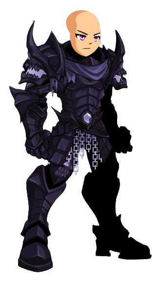
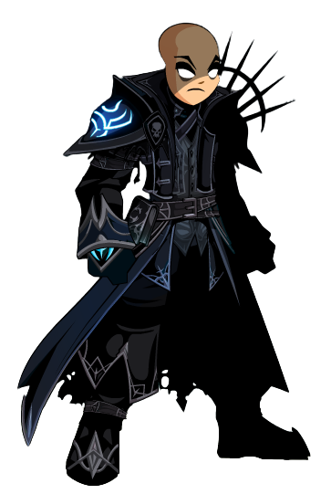
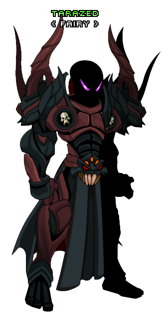
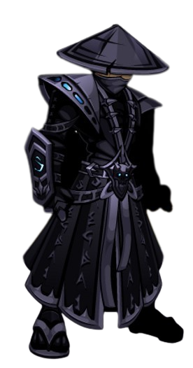
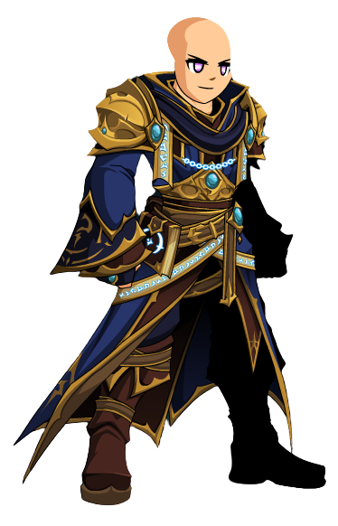

Chaos Avenger
>
The Chaos Avenger is a fearsome class that wields the power of chaos. They can unleash devastating attacks and harness the unpredictable forces of chaos to defeat their foes.
In one timeline, The Hero Dragon of Time managed to defeat Drakath and get a hold of their Chaos Amulet. Instead of becoming the Slayer who tried to destroy Lore, The Hero became the Avenger that saved it.
Skill Description: Chaos Avengers can use their chaos powers to create chaos rifts that damage enemies over time while providing a defense boost for themselves.
Skills
Skill 1: Chaos Great Sword
Swing your Greatsword down on your target for massive damage. Gain a stack of Chaos Fury, increasing your Crit Chance and Crit Damage by 15% for 12 seconds, stacks to 4. Deals double damage to Branded targets.
Skill 2: Chaos Siphon
Impale your target with your Greatsword to drain life from them. Chaorrupt your target's defenses, increasing the damage they take by 10% for 15 seconds, stacks to 4.
Skill 3: Flux
Chaos manifests itself, dealing damage while randomly reducing your target's Dodge, Crit Chance, Hit Chance, Haste, and outgoing damage. Each debuff reduces its respective stat by 30% for 20 seconds. Also applies Focus for 4 seconds, which forces your target to attack only you for the duration. Can’t miss and always crits.
Skill 4: Chaos Bulwark
Chaorrupt the raw energy around you and release a portion of it at your target, dealing damage while absorbing the remainder into your armor. Gain Chaotic Armor, healing you over time and granting you 60% defense for 15 seconds.
Fury Unleashed
Deals damage and channels your fury into your greatsword. Gain Unstoppable Force, increasing your haste by 25% for 25 seconds. If your opponent is Ravaged, gain Fury Unleashed, increasing your outgoing damage by 50% for 10 seconds.
Legion Revenant
>
Legion Revenants are powerful undead warriors who are part of the Legion. They can drain the life force of their enemies and have high sustainability in battle.
Steeped in darkness, Legion Revenants derive their power from the essence responsible for the Legion's un-death. The Legion flows through them, and they are the Legion.
Skill Description: Legion Revenants can unleash soul-draining attacks, siphoning life from their targets to heal themselves.
Skills
Skill 1: Malevolent Burst
A sinister spell of powerful dark energy. Deals moderate damage to one target and light damage to two additional targets. Recovers 15 mana on hit.
Skill 2: Atramentous Shade
Summon a malicious pitch black fog, applying Decay for 2 seconds. The darkness traps your enemy, decreasing their Dodge by 25% while damaging them over time for 12 seconds. Always crits and can’t miss.
Skill 3: Wicked Purgatory
Conjure otherworldly flames to sear your opponents for moderate damage, reducing their Crit Chance by 15%, plus an additional 3% per stack (up to 30% total). The flames protect you, decreasing incoming damage by 20%, plus an additional 4% per stack (up to 40% total). Both effects last 12 seconds.
Skill 4: Depraved Empowerment
Touch the darkness within yourself and your allies by drawing out their twisted inclinations, increasing their Dodge, Crit Chance, Crit Damage and outgoing damage by 30% for 12 seconds. Immorality strengthens your magic, increasing your Haste by 10% and applying a strong heal over time effect and mana shield for 12 seconds.
Skill 5: Anathema
Focus all your energy and unleash a massive burst of dark magic, dealing high damage.
Void Highlord
>
The Void Highlord is a master of dark and void powers. They can control the shadows and use them to obliterate their adversaries.
Only the strongest, toughest, most dedicated (and insane) members of the Nulgath Nation can survive the trials required to unlock the Void Highlord Class!
Skill Description: Void Highlords can manipulate dark energy, launching powerful void attacks that pierce through enemy defenses.
Skills
Skill Description
Skill 1: Contract Burst
Seal your opponent's fate. If Shackled is active, applies Soul Fend to yourself, a HoT for 5 seconds, stacks to 5. If Unshackled is active, applies Soul Breach to your target, a DoT for 5 seconds, stacks to 5
Skill 2: Shackle
Binds your soul for protection, dealing damage while reducing your incoming damage by 50% for 15 seconds. Also applies Soul Void, increasing your Haste, HoT power, and DoT power by 30% for 12 seconds. Always crits and can't miss. Costs 20% of your maximum health.
Skill 3: Highlord Gaze
Strike fear into your opponent with the eyes of the Void, dealing damage and feeding off their despair, healing you. Has a 30% chance to stun and applies Congealed, reducing their Hit Chance, Haste, and Dodge by 20% for 6 seconds.
Skill 4: Unshackle
Releases your soul for destruction, dealing damage while increasing your outgoing damage by 50% for 15 seconds. Also applies Soul Void, increasing your Haste, HoT power, and DoT power by 30% for 12 seconds. Always crits and can't miss. Costs 20% of your maximum health.
Skill 5: Armageddon
Spawn a portal straight to the Void itself to call a mass amount of swords to do your bidding, dealing cataclysmic damage. Applies Arbiter's Wrath, increasing your Crit Damage by 75% for 12 seconds. Also applies Kneel Before the Nation, increasing your outgoing damage and reducing your incoming damage by 50% for 12 seconds. At rank 10, you sacrifice your opponent’s soul to the Void, increasing their incoming damage by 5% for 20 seconds, stacks to 10.
Yami no Ronin
>
The Yami no Ronin is a mysterious class inspired by the samurai. They wield the power of darkness and execute precise, deadly strikes.
While others /partied, you studied the blade. While others were training their reputation, you mastered the art of unsheathing and striking. While others wasted their days being AFK in Yulgar, you cultivated inner strength. Now that the world is set aflame and the fiends are at the gates, only you have the power to cut through shadow as if it were steel.
Skill Description: Yami no Ronins can perform shadowy sword techniques that deal high damage with a focus on critical strikes.
Skills
Skill 1: Batto
Attack your enemy from the shadows using the cover of darkness. Each hit applies Flash for 15 seconds, decreasing your Dodge by 7%, Damage Reduction by 4%, and increasing your Outgoing Damage, Hit Chance, and Crit Chance by 4%. Stacks to 20.
Skill 2: Tachi
Sequentially cut through your opponent’s defenses with three strikes, each dealing moderate damage. The first strike increases your outgoing Damage by 20% for 9 seconds, the second strike increases your outgoing physical Damage by 20% for 7 seconds, and the third strike increases your Critical Hit Damage by 150% for 5 seconds. Effects do not refresh. Always hits but can’t crit.
Skill 3: Yami no Maku
Wrap your weapon in shadows and lash out, releasing a shockwave of homing dark energy. The darkness gradually consumes your opponent before fading away, applying a DoT that grows progressively stronger for 10 seconds. Also has a 35% chance to apply Spinning Dragon, reducing their next attack to 0 damage. Always hits but can’t crit.
Skill 4: Kettou
Gouge your target with your weapon, dealing strong damage. You also absorb their life force, restoring your health based on damage dealt. Also applies 1 stack of Flash.
Skill 5: Jiggen Kogeki
Use your control of the shadows to tear through reality itself, dealing unavoidable strong damage. If Yami is applied on your opponent, deals massive damage depending on how much time is left on before it fades (less time means more damage). Consumes all stacks of Flash.
Archmage
>
Archmages are highly skilled spellcasters, specializing in elemental magic. They can control fire, ice, and lightning to defeat their opponents.
Mana is a permeating force, present in all life and space. ArchMage guide the course of free-flowing mana in the air, creating phenomena in the physical world and altering its course
Skill Description: Archmages can cast powerful elemental spells, creating fiery explosions, freezing their foes, and delivering shocking lightning attacks.
Skills
Skill 1: Incantation
Incant an unavoidable status spell and inflict your foes with Leywilt, reducing Dodge by 35%, Damage by 25%, and Crit Chance by 15% for 20 seconds.
Skill 2: Immolation
Set ablaze the mana current, consuming the foes around you in an intense inferno and thawing any afflicted with Cryostasis. The fire ravenously burns, dealing more damage the lower your MP and leaving them burning based on the damage dealt, stacking to 2 and lasting 6 seconds.
Skill 3: Glacial Impact
Still the flow of the mana stream, flash freezing your foes in place and drawing in 15 mana for yourself. Your foes remain in Cryostasis, reducing their Hit Chance and Damage dealt by 30% while they take 30% increased magic damage for 6 seconds.
Skill 4: Supernova
Agitated mana bursts forth from you, engulfing your foes in a radiant supernova dealing more damage the lower your life force is.
Skill 5: Arcane Sigil
Inscribe an Arcane Sigil, significantly increasing your magical power. Your Arcane Sigil increases your Damage Dealt by 30% for 30 seconds, but the Overload of the spell increases your mana costs by 50% for 4 seconds and costs 40% of your current health.